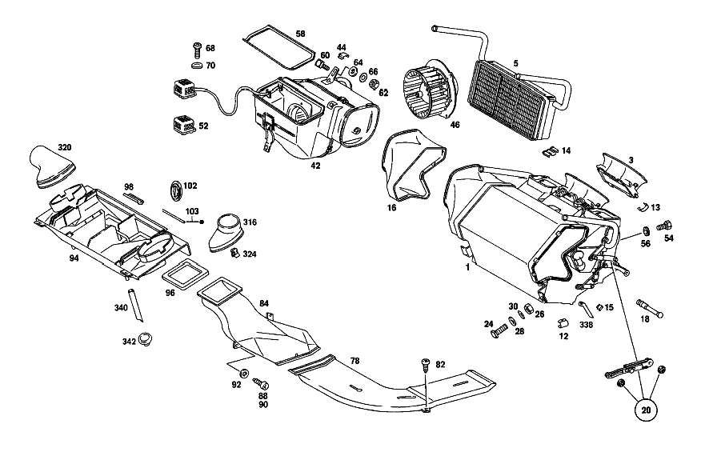

| № | Артикул | Название | Кол. | Примечание | Ограничение |
|---|---|---|---|---|---|
| 1 | A 116 830 30 62 | КОЖУХ СИСТЕМЫ ОТОПЛЕНИЯ | 1 | ||
| 3 | A 116 830 00 25 | - Патрубок прит. воздуха | 1 | ||
| 5 | A 116 835 00 01 | - ТЕПЛООБМЕННИК | 1 | ||
| 6 | A 116 830 00 58 | - ИСПАРИТЕЛЬ | - | ||
| 6 | A 107 830 00 58 | - ИСПАРИТЕЛЬ | - | ||
| 6 | A 000 830 48 58 | - Испаритель | 1 | ||
| 8 | A 115 835 00 72 | - КЛАПАН | 1 | ||
| 10 | A 108 835 02 47 | - Сетка | 1 | ||
| 12 | A 000 835 13 34 | - ПРУЖИНА | 10 | ||
| 13 | A 000 835 12 34 | - ПРУЖИНА | - | ||
| 13 | A 123 835 00 34 | - Пружина | 4 | ||
| 14 | A 000 835 11 34 | - Пружина | 2 | ||
| 15 | A 000 835 10 34 | - Пружина | 10 | ||
| 16 | A 116 831 01 88 | - ШЛАНГ | 1 | ||
| 18 | A 000 835 31 15 | - ТРУБОПРОВОД | 1 | TEMPERATURE\-FEELER CAPILLARY TUBE | |
| 20 | A 116 586 00 83 | - ремкомплект | 2 | ||
| 24 | A 000 990 02 33 | БОЛТ | - | ||
| 24 | A 000 990 52 33 | болт | 2 | ||
| 26 | N 000934 006007 | Гайка | 2 | ||
| 28 | N 009021 006103 | Шайба | - | ||
| 28 | N 009021 006208 | Шайба | 2 | 6 MM | |
| 30 | N 006797 006145 | Зубчатая шайба | 2 | ||
| 33 | A 116 835 12 14 | ДЕРЖАТЕЛЬ | 1 | ||
| 38 | A 107 997 01 81 | втулка | 2 | ||
| 40 | A 116 997 04 81 | КАБ. ВТУЛКА | 1 | ||
| 41 | A 116 997 16 81 | КАБ. ВТУЛКА | 1 | ||
| 42 | A 116 830 05 62 | КОЖУХ СИСТЕМЫ ОТОПЛЕНИЯ | 1 | ||
| 44 | A 000 835 13 34 | - ПРУЖИНА | 6 | ||
| 46 | A 000 835 81 02 | - МОТОР | 1 | ||
| 52 | A 116 835 01 06 | - Дополнительный резистор | 1 | ||
| 54 | N 000933 006103 | - Винт | - | ||
| 54 | N 304017 006018 | - Винт с 6-гранной головкой | 3 | M6X12 | |
| 56 | N 006797 006145 | - Зубчатая шайба | 3 | ||
| 58 | A 116 835 00 98 | - УПЛОТНИТЕЛЬ | 1 | ||
| 58C | A 116 830 01 08 | ВЕНТИЛЯТОР | 1 | ||
| 58E | A 000 835 01 57 | - Усилитель | - | ||
| 58E | A 000 835 00 57 | - УСИЛИТЕЛЬ | 1 | ||
| 58H | A 000 800 03 73 | - ВЫКЛЮЧАТЕЛЬ | - | ||
| 58H | A 000 800 06 73 | - Переключатель | 1 | ЦВЕТ ЗЕЛЕН. | |
| 58K | A 000 800 02 73 | - ВЫКЛЮЧАТЕЛЬ | - | ||
| 58K | A 000 800 05 73 | - Переключатель | 1 | COLOR,YELLOW | |
| 58M | A 000 994 89 45 | - Стопор болта | 2 | 8 MM | |
| 58P | A 000 800 17 75 | - Исполнительный элемент | 1 | ||
| 58R | A 116 800 03 80 | - ТЯГА ПЕРЕКЛ. ПЕРЕДАЧ | 1 | ||
| 58T | N 006799 003202 | - Стопорная шайба | 1 | ||
| 58W | A 116 800 21 75 | - Исполнительный элемент | 1 | [220] FROM CHASSIS 020 105376 024 119773 032,033 083181 036 004590 120 001729 | |
| 58X | A 000 994 96 45 | - предохранитель | 3 | ||
| 58Z | A 116 987 05 41 | - Эластомерная шайба | 3 | ||
| 59B | A 000 821 02 47 | - Реле | 1 | ||
| 59D | A 116 833 13 45 | - Рычаг | 1 | ||
| 59F | N 006799 004001 | - Стопорная шайба | 1 | ||
| 59K | A 116 833 01 68 | - ПРУЖИНА | 1 | ||
| 59P | A 116 833 02 68 | - пружина | 1 | ||
| 59R | A 116 805 00 77 | - Жиклер | 1 | ||
| 59S | A 115 997 06 81 | - втулка | 1 | 23 MM | |
| 59T | A 000 835 13 34 | - ПРУЖИНА | 6 | ||
| 59U | A 002 821 18 51 | - Переключатель | 1 | ||
| 59W | A 000 835 98 02 | - Воздуходувка радиальная | 1 | ||
| 59X | A 002 545 24 28 | - ШТЕКЕР | - | ||
| 59X | A 009 545 40 28 | - Сцепление, механическое | 1 | 2\-PIN, BLOWER MOTOR; 2\-PIN | |
| 59Y | A 116 835 00 98 | - УПЛОТНИТЕЛЬ | 1 | ||
| 59Z | A 116 835 02 06 | СОПРОТИВЛЕНИЕ | 1 | ДЛЯ ЭЛЕКТРОДВИГАТЕЛЯ ВЕНТИЛЯТОРА | |
| 60 | A 000 990 02 33 | БОЛТ | - | ||
| 60 | A 000 990 52 33 | болт | 2 | ||
| 62 | N 000934 006007 | Гайка | - | ||
| 64 | N 009021 006103 | Шайба | - | ||
| 64 | N 009021 006208 | Шайба | 2 | 6 MM | |
| 66 | N 006797 006145 | Зубчатая шайба | 2 | ||
| 68 | N 007985 004149 | Винт | - | M4X8 | |
| 68 | N 000000 001933 | Винт с 6-гр. глвк | 2 | BLOWER SERIES RESISTOR TO CENTRAL PART; M4X8 | |
| 70 | N 000137 004202 | Пружинная шайба | 2 | BLOWER SERIES RESISTOR TO CENTRAL PART | |
| 70C | A 000 835 09 79 | ДАТЧИК ТЕМПЕРАТУРЫ | 1 | INBOARD TEMPERATURE; UPPER PART; AT TOP OF INSTRUMENT PANEL | |
| 70F | A 002 545 24 28 | - ШТЕКЕР | - | ||
| 70F | A 009 545 40 28 | - Сцепление, механическое | 1 | 2 ШТ.; 2\-PIN | |
| 70K | A 000 835 12 79 | Датчик температуры | 1 | INBOARD TEMPERATURE; LOWER PART; AT TOP OF INSTRUMENT PANEL | |
| 70M | A 000 835 10 79 | Датчик температуры | 1 | OUTDOOR TEMPERATURE;AT CENTRAL INSIDE PART BELOW WINDSHIELD | |
| 70P | A 116 830 17 96 | Шланг | 1 | BETWEEN TEMPERATURE SENSOR AND AIR NOZZLE | |
| 70R | A 116 831 06 88 | ШЛАНГ | 1 | BETWEEN AIR\-BLAST NOZZLE AND FRONT PANEL PILLAR | |
| 70T | A 116 835 01 68 | Штуцер | 1 | AT FRONT PANEL PILLAR,RIGHT | |
| 72 | A 116 830 03 19 | Дефлектор обдува стекла | 1 | СЛЕВА | |
| 76 | A 107 831 00 98 | - Уплотнение | 2 | ||
| 78 | A 116 831 09 46 | КАНАЛ | 1 | СЛЕВА [181] FROM CHASSIS 020 052847 032,033 043327 | |
| 82 | N 007981 004331 | Шуруп | 4 | ||
| 84 | A 116 831 01 46 | Воздушный канал | 1 | СЛЕВА | |
| 88 | N 007981 004331 | Шуруп | 2 | ||
| 90 | N 007981 004270 | Шуруп | 2 | ||
| 92 | N 009021 004108 | Шайба | - | ||
| 92 | A 094 990 63 08 | Шайба | 2 | ||
| 94 | A 116 830 07 45 | Воздушный канал | 1 | ||
| 95C | A 116 830 09 45 | КАНАЛ ВОЗДУШНЫЙ | 1 | ||
| 95E | A 116 800 19 75 | - Исполнительный элемент | 1 | ||
| 95H | A 116 805 00 03 | - СОЕДИНИТЕЛЬ | 1 | [402] БОЛЬШЕ НЕ ПОСТАВЛЯЕТСЯ | |
| 96 | A 107 831 01 42 | Уплотнительная рамка | 2 | ||
| 98 | A 107 831 01 34 | Пружина | 4 | ||
| 98 | A 107 831 01 34 | Пружина | 2 | ||
| 100 | A 116 831 00 34 | Пружина | 2 | ||
| 102 | A 116 997 22 81 | втулка | 1 | ||
| 103 | A 001 987 56 46 | Уплотнение | 1 | 1200 MM; BETWEEN AIR CONDITIONER CASE AND CENTRAL AIR DUCT [404] ЗАКАЗЫВАТЬ ПОГОННЫМИ МЕТРАМИ | |
| 103 | A 001 987 56 46 | Уплотнение | 1 | 40 MM; TO WATER FAUCET AT CENTRAL PART BELOW WINDSHIELD, INSIDE | |
| 104 | A 116 831 00 14 | ДЕРЖАТЕЛЬ | 1 | ||
| 106 | N 000933 006103 | Винт | - | ||
| 106 | N 304017 006018 | Винт с 6-гранной головкой | 2 | M6X12 | |
| 108 | N 009021 006103 | Шайба | - | ||
| 108 | N 009021 006208 | Шайба | 2 | 6 MM | |
| 112 | A 116 830 01 45 | Воздушный канал | 1 | СЛЕВА | |
| 116 | A 116 831 05 98 | - Уплотнение | 1 | СНАРУЖИ СЛЕВА | |
| 118 | N 007981 004248 | Шуруп | 2 | ||
| 120 | N 000125 005317 | Шайба | - | ||
| 120 | N 000433 005304 | Шайба | 2 | 5mm | |
| 122 | A 000 994 71 45 | гайка | 4 | ||
| 124 | N 007981 004248 | Шуруп | 4 | ||
| 126 | N 009021 005202 | Шайба | - | ||
| 126 | N 009021 005205 | Шайба | 4 | ||
| 128 | A 116 831 01 12 | УГОЛ | 1 | ||
| 130 | A 120 420 02 27 | Т-образный винт | 1 | ||
| 132 | N 000125 006421 | Шайба | 1 | ||
| 132 | N 000125 006449 | Шайба | 1 | ||
| 134 | A 094 990 68 10 | Пружинное кольцо | - | [402] БОЛЬШЕ НЕ ПОСТАВЛЯЕТСЯ | |
| 136 | N 000934 006007 | Гайка | 1 | ||
| 138 | A 000 994 06 45 | Пружинная гайка самореза | 2 | ||
| 140 | N 007981 004248 | Шуруп | 2 | ||
| 142 | N 000125 005317 | Шайба | - | ||
| 142 | N 000433 005304 | Шайба | 2 | 5mm | |
| 144 | A 116 831 02 12 | УГОЛ | 1 | ||
| 148 | N 007981 004258 | Шуруп | 1 | 4.8X16 | |
| 150 | N 000125 005317 | Шайба | - | ||
| 150 | N 000433 005304 | Шайба | 1 | 5mm | |
| 152 | N 912004 005100 | Пружинное кольцо | 1 | ||
| 166 | A 116 830 07 85 | Устройство управления | 1 | СЛЕВА | |
| 168 | A 116 830 08 85 | Устройство управления | 1 | СПРАВА | |
| 170 | A 116 800 00 73 | - Переключатель | 2 | ||
| 172 | N 000933 004016 | - БОЛТ | 2 | ||
| 174 | N 000125 004311 | - Шайба | - | ||
| 174 | N 000125 004319 | - Шайба | 2 | ||
| 176 | N 000137 004202 | - Пружинная шайба | 2 | ||
| 178 | N 001481 003011 | - Распорный штифт | 2 | TO LOCK BEARING BRACKET с BASE PLATE | |
| 180 | N 000933 006175 | Винт | - | M6 X 16 | |
| 180 | N 304017 006016 | Винт с 6-гранной головкой | 4 | M6X16 | |
| 182 | N 006797 006145 | Зубчатая шайба | 4 | ||
| 186 | N 912003 003000 | Двойной зажим | 1 | ||
| 188 | A 116 833 01 40 | РУЧКА | 4 | ||
| 190 | N 000933 006122 | Винт | - | ||
| 190 | N 304017 006034 | Винт с 6-гранной головкой | 1 | ||
| 192 | N 000137 006204 | Пружинная шайба | 1 | ||
| 193 | N 000933 006122 | Винт | - | ||
| 193 | N 304017 006034 | Винт с 6-гранной головкой | 1 | ||
| 194 | N 009021 006103 | Шайба | - | ||
| 194 | N 009021 006208 | Шайба | 1 | 6 MM | |
| 197 | N 006797 008120 | Зубчатая шайба | 2 | [402] БОЛЬШЕ НЕ ПОСТАВЛЯЕТСЯ | |
| 200 | N 000137 006204 | Пружинная шайба | 2 | ||
| 206 | N 000934 006007 | Гайка | 2 | ||
| 210 | A 116 830 01 31 | Проволочная тяга | 1 | ||
| 212 | A 100 710 09 18 | - Обшивка | 1 | ||
| 214 | N 000933 005058 | Винт | 1 | ||
| 216 | N 912004 005100 | Пружинное кольцо | 1 | ||
| 218 | A 001 988 68 78 | Скоба | 1 | ||
| 219E | A 116 833 00 27 | - ПЛАСТИНА | 1 | ||
| 219K | A 116 820 07 10 | - Переключатель | 1 | ||
| 219L | A 116 821 00 58 | - Кнопка | 5 | ||
| 219N | A 116 820 06 10 | - Переключатель | 1 | ТЕМПЕРАТУРА [402] БОЛЬШЕ НЕ ПОСТАВЛЯЕТСЯ | |
| 219P | A 116 820 77 15 | - Электрический провод | 1 | SEE GROUP 68, FIG.NO.154 | |
| 219P | A 116 820 77 15 | Электрический провод | 4 | SEE GROUP 68, FIG.NO.155 | |
| 219W | A 000 820 79 10 | Переключатель | 1 | COMPRESSOR; AT OPERATING UNIT COVERING | |
| 220 | A 116 830 15 43 | Клапан | 2 | ||
| 222 | A 116 831 01 42 | РАМА | 1 | ||
| 224 | N 007982 004318 | Шуруп | 2 | ||
| 226 | A 000 994 04 45 | ПРЕДОХРАНИТЕЛЬ | - | ||
| 226 | A 140 994 10 45 | предохранитель | 2 | ||
| 228 | A 116 830 00 85 | Управление | 1 | ||
| 230 | N 000137 005203 | Пружинная шайба | 2 | ||
| 232 | N 000934 005008 | Гайка | 2 | M5 | |
| 234 | A 116 833 04 40 | РУЧКА | 1 | ||
| 240 | A 116 830 15 43 | Клапан | 2 | ||
| 242 | A 116 830 13 43 | - РАСПРЕДЕЛИТЕЛЬ ВОЗДУХА | - | ||
| 246 | N 000137 005203 | Пружинная шайба | 4 | ||
| 248 | N 000934 005008 | Гайка | 4 | M5 | |
| 250 | A 116 833 03 40 | РУЧКА | 1 | СЛЕВА | |
| 254 | A 116 831 00 88 | Соединение | 1 | ||
| 256 | A 000 990 08 92 | Распорная заклепка | 4 | ||
| 258 | A 116 835 00 20 | Водяной кран | 1 | MAKE BEHR | |
| 259 | A 116 833 10 45 | Рычаг | 1 | ||
| 262 | A 116 800 09 75 | ЭЛЕМЕНТ | - | [151] UP TO CHASSIS 032,033 004337 [169] FROM CHASSIS 004338 SEE GROUP 80 | |
| 264 | N 000127 004203 | Пружинное кольцо | - | ||
| 264 | N 912004 004102 | Пружинное кольцо | 2 | [168] UP TO CHASSIS:032,033 011407 | |
| 266 | N 000934 004004 | Гайка | 2 | M4 [168] UP TO CHASSIS:032,033 011407 | |
| 268 | A 116 987 05 41 | Эластомерная шайба | 3 | ||
| 270 | A 000 994 96 45 | предохранитель | 3 | ||
| 272 | A 107 833 01 97 | ШЛАНГ | - | ||
| 272 | A 117 078 05 81 | Шланг | 1 | ||
| 274 | N 007981 004248 | Шуруп | 2 | ||
| 276 | N 000137 005203 | Пружинная шайба | 2 | ||
| 280 | A 116 835 01 98 | Уплотнение | 1 | ||
| 280C | A 000 830 03 84 | Клапан | 1 | АВТОМАТИЧЕСКИ | |
| 280D | A 000 820 35 10 | - ВЫКЛЮЧАТЕЛЬ | 1 | ||
| 280E | A 116 990 17 01 | БОЛТ | 2 | CONTROL VALVE TO BRACKET | |
| 280H | A 116 830 00 14 | Держатель | 1 | ||
| 280K | A 000 835 25 64 | НАСОС | - | ||
| 280K | A 000 835 69 64 | Циркуляционный насос | 1 | ||
| 280M | A 002 545 24 28 | - ШТЕКЕР | - | ||
| 280M | A 009 545 40 28 | - Сцепление, механическое | 1 | 2\-PIN | |
| 280N | A 000 586 05 83 | ремкомплект | 1 | НАСОС ОЖ | |
| 280P | A 116 835 02 96 | Промежуточная прокладка | 1 | ||
| 280S | N 916002 049100 | Хомут | 1 | ||
| 281 | A 116 831 03 94 | Шланг | 1 | ||
| 285 | N 916026 023001 | Хомут | - | 23\-30 MM | |
| 285 | N 000000 000667 | Хомут | 1 | 23\-30 MM | |
| 292 | N 916026 020001 | Хомут | 1 | 20\-27 MM | |
| 294 | A 107 831 01 94 | Шланг | 1 | [170] UP TO CHASSIS:020 029847 FROM CHASSIS:032,033 004338-029508 | |
| 296 | N 916026 020001 | Хомут | 2 | 20\-27 MM | |
| 298 | A 116 831 02 94 | Шланг | 1 | ||
| 302 | N 916026 020001 | Хомут | 2 | СМ. РИС.: 521 СМ. РИС.: 527 СМ. РИС.: 533; 20\-27 MM | |
| 308 | A 116 830 07 15 | ТРУБОПРОВОД | 1 | FEED,BETWEEN ENGINE AND SERVO\-UNIT WATER PUMP | |
| 308C | A 000 988 05 27 | Крепежная втулка | 1 | ||
| 309 | A 116 830 08 15 | ТРУБОПРОВОД | 1 | RETURN; BETWEEN CONTROL VALVE & HEAT EXCHANGER OR ENGINE,RESP. | |
| 311 | A 116 831 06 94 | Шланг | 1 | BETWEEN WATER PUMP AND CONTROL VALVE | |
| 312 | A 116 831 07 94 | Шланг | 1 | BETWEEN FEED LINE AND WATER PUMP | |
| 314 | A 116 831 10 94 | Шланг | 1 | МЕЖДУ ТЕПЛООБМЕН. И ОБРАТН. ТРУБОПРОВ. | |
| 314D | A 116 831 11 94 | Шланг | 1 | BETWEEN RETURN LINE AND CONTROL VALVE | |
| 315 | A 110 987 05 41 | Кольцо | 1 | BETWEEN CONTROL VALVE AND HEAT EXCHANGER | |
| 315M | N 916026 020001 | Хомут | 9 | 20\-27 MM | |
| 315P | N 000000 000667 | Хомут | 1 | 23\-30 MM | |
| 316 | A 116 831 00 25 | ШТУЦЕР | 1 | СЛЕВА | |
| 320 | A 116 831 01 25 | ШТУЦЕР | 1 | СПРАВА | |
| 324 | A 107 988 18 78 | Скоба | 4 | ||
| 328 | A 116 831 04 88 | ШЛАНГ | - | ||
| 328 | A 116 831 10 88 | Шланг | 2 | ||
| 330 | A 116 835 01 21 | Декоративная розетка | 1 | СЛЕВА | |
| 334 | A 116 835 05 97 | Шланг | 2 | ||
| 336 | A 116 997 00 81 | втулка | 2 | ||
| 338 | A 116 835 02 97 | ШЛАНГ | 2 | ||
| 340 | A 116 835 01 97 | Шланг | 2 | ||
| 342 | A 107 997 02 81 | втулка | 2 | ||
| 343 | A 116 997 00 81 | втулка | 2 | НА ПЕРЕГОРОДКЕ | |
| 344 | A 116 830 01 28 | ВОДООТВОД | 1 | СПРАВА [402] БОЛЬШЕ НЕ ПОСТАВЛЯЕТСЯ | |
| 346 | N 007981 003203 | Шуруп | 3 | ||
| 350 | A 116 836 01 65 | РЕШЕТКА | 1 | НА ПЕРЕГОРОДКЕ | |
| 354 | A 116 836 01 18 | РЕШЕТКА | 1 | НА ПЕРЕГОРОДКЕ | |
| 356 | A 001 987 24 51 | резиновый профиль | 1 | 700 MM [404] ЗАКАЗЫВАТЬ ПОГОННЫМИ МЕТРАМИ | |
| 358 | A 001 987 46 51 | резиновый профиль | 2 | 160 MM [404] ЗАКАЗЫВАТЬ ПОГОННЫМИ МЕТРАМИ | |
| 358 | A 001 987 46 51 | резиновый профиль | 3 | 50 MM LONG 160 MM [404] ЗАКАЗЫВАТЬ ПОГОННЫМИ МЕТРАМИ | |
| 360 | A 108 698 04 97 | Промежуточная прокладка | 3 | 40 MM [404] ЗАКАЗЫВАТЬ ПОГОННЫМИ МЕТРАМИ | |
| 362 | A 000 990 03 92 | ЗАКЛЕПКА | - | ||
| 362 | A 000 990 22 92 | Распорная заклепка | 4 | ||
| 364 | A 000 800 11 75 | Исполнительный элемент | - | [165] TRANSFERRED TO GROUP 80 | |
| 367 | A 107 805 03 74 | Тяга переключения передач | - | [165] TRANSFERRED TO GROUP 80 | |
| 369 | N 006799 003202 | Стопорная шайба | - | [165] TRANSFERRED TO GROUP 80 | |
| 370 | N 007976 005203 | Шуруп | - | [165] TRANSFERRED TO GROUP 80 | |
| 372 | N 000137 006204 | Пружинная шайба | - | [165] TRANSFERRED TO GROUP 80 | |
| 375 | A 000 994 19 60 | ПРЕДОХРАНИТЕЛЬ | - | [402] БОЛЬШЕ НЕ ПОСТАВЛЯЕТСЯ [165] TRANSFERRED TO GROUP 80 | |
| 378 | A 000 997 65 52 | Шланг | - | 850 MM MEDIUM LIGHT GREEN\-LIGHT BLUE [404] ЗАКАЗЫВАТЬ ПОГОННЫМИ МЕТРАМИ [165] TRANSFERRED TO GROUP 80 | |
| 380 | A 000 997 64 52 | Шланг | - | 850 MM MEDIUM GREEN\-ORANGE [404] ЗАКАЗЫВАТЬ ПОГОННЫМИ МЕТРАМИ [165] TRANSFERRED TO GROUP 80 | |
| 382 | A 000 997 07 52 | ШЛАНГ | - | ||
| 382 | A 000 997 65 52 | Шланг | - | MEDIUM GREEN/YELLOW 1220 MM [404] ЗАКАЗЫВАТЬ ПОГОННЫМИ МЕТРАМИ [165] TRANSFERRED TO GROUP 80 | |
| 383 | A 117 078 01 45 | Штуцер ответвления | - | [165] TRANSFERRED TO GROUP 80 | |
| 384 | A 007 997 61 82 | Шланг | - | 30 MM AT DISTRIBUTOR 50 MM AT VACUUM ELEMENT 150 MM AN VACUUM SWITCH; 9X2.75 MM [404] ЗАКАЗЫВАТЬ ПОГОННЫМИ МЕТРАМИ [165] TRANSFERRED TO GROUP 80 | |
| 387 | A 001 544 01 94 | Лампа накаливания | - | ||
| 387 | A 000 825 00 94 | Лампа накаливания | - | ||
| 387 | N 000000 001061 | Лампа накаливания | 1 | ||
| 390 | A 116 821 01 51 | Переключатель | 1 | ||
| 395 | A 001 835 29 06 | Переключатель | 1 | ||
| 398 | A 116 821 00 65 | Корпус | 1 | ||
| 399 | A 107 545 00 72 | гайка | 1 | ||
| 400 | A 001 544 01 94 | Лампа накаливания | - | ||
| 400 | A 000 825 00 94 | Лампа накаливания | - | ||
| 400 | N 000000 001061 | Лампа накаливания | 1 | [193] FOR SOCKET,SEE GROUP 54,FIG.NO.091 | |
| 401 | A 116 820 01 92 | Кнопка | 1 | ||
| 403 | A 116 833 05 14 | ДЕРЖАТЕЛЬ | 1 | ||
| 405 | N 007981 003257 | Шуруп | 2 | ||
| 410 | N 007981 004339 | Шуруп | - | ||
| 410 | N 000000 000459 | Шуруп | 1 | MBN 10169 4.8 X 9.5 | |
| 413 | A 116 830 08 70 | КОНДЕНСАТОР | 1 | ||
| 416 | A 116 830 04 83 | Бак | 1 | [199] FROM CHASSIS 024 093823 033 070219 036 003082 | |
| 416C | A 000 820 43 10 | ВЫКЛЮЧАТЕЛЬ | - | ||
| 416C | A 124 820 59 10 | Переключатель | - | ||
| 416C | A 124 821 36 51 | ВЫКЛЮЧАТЕЛЬ | - | ||
| 416C | A 124 820 83 10 | Переключатель | 1 | [199] FROM CHASSIS 024 093823 033 070219 036 003082 | |
| 417 | A 001 821 92 51 | РЕГУЛЯТОР | - | ||
| 419 | A 000 820 07 10 | ВЫКЛЮЧАТЕЛЬ | - | ||
| 419 | A 000 820 80 10 | Регулятор | 1 | НА БАЧКЕ ЖИДКОСТИ | |
| 422 | N 007976 005202 | Шуруп | 2 | CONDENSER TO STIFFENING AND TO FRONT CROSS MEMBER | |
| 425 | N 009021 006103 | Шайба | - | ||
| 425 | N 009021 006208 | Шайба | 2 | CONDENSER TO STIFFENING AND TO FRONT CROSS MEMBER; 6 MM | |
| 427 | N 000933 006103 | Винт | - | ||
| 427 | N 304017 006018 | Винт с 6-гранной головкой | 2 | CONDENSER TO STIFFENING AND TO FRONT CROSS MEMBER; M6X12 | |
| 430 | A 094 990 68 10 | Пружинное кольцо | 2 | CONDENSER TO STIFFENING AND TO FRONT CROSS MEMBER | |
| 431 | N 000125 006421 | Шайба | 2 | CONDENSER TO STIFFENING AND TO FRONT CROSS MEMBER | |
| 431 | N 000125 006449 | Шайба | 2 | CONDENSER TO STIFFENING AND TO FRONT CROSS MEMBER | |
| 433 | A 115 984 00 22 | ПЛОСКАЯ ГАЙКА | - | ||
| 433 | N 913008 006300 | Гайка | 2 | CONDENSER TO STIFFENING AND TO FRONT CROSS MEMBER | |
| 434 | A 116 830 04 96 | ШЛАНГ | 1 | ||
| 438 | A 116 830 14 15 | ТРУБОПРОВОД | 1 | ||
| 441 | N 007976 004215 | Шуруп | 1 | 4.8X16 | |
| 443 | N 009021 005202 | Шайба | - | ||
| 443 | N 009021 005205 | Шайба | 1 | ||
| 445 | N 007976 005203 | Шуруп | 1 | ||
| 458 | A 116 997 02 81 | втулка | 1 | ||
| 458D | A 322 997 14 81 | Проходная втулка | 1 | ||
| 459 | A 116 830 01 96 | ШЛАНГ | - | ||
| 460 | A 000 997 21 52 | Шланг | 1 | NW 10 6000 MM LONG [154] LESS HOSE CONNECTIONS,STATE THE REQUIRED LENGTH WHEN ORDERING | |
| 461 | A 000 997 23 52 | Шланг | 1 | NW 13 6000 MM LONG [154] LESS HOSE CONNECTIONS,STATE THE REQUIRED LENGTH WHEN ORDERING | |
| 462 | A 000 997 19 52 | ШЛАНГ | - | ||
| 462 | A 018 997 05 82 | ШЛАНГ | - | ||
| 462 | A 018 997 58 82 | ШЛАНГ | - | ||
| 462 | A 000 997 17 52 | Шланг | 1 | BLACK\-3500 MM LONG [154] LESS HOSE CONNECTIONS,STATE THE REQUIRED LENGTH WHEN ORDERING | |
| 463 | A 000 997 97 68 | Штуцер шланга | 1 | NW 8 5/8" W 90 GR. | |
| 464 | A 000 997 98 68 | СОЕДИНИТЕЛЬ | 1 | NW 8 5/8" W 180 GR. | |
| 466 | A 000 997 10 68 | СОЕДИНИТЕЛЬ | 1 | NW 10 3/4" W 90 GR. | |
| 467 | A 000 997 23 68 | Штуцер шланга | 1 | NW 13 7/8" W 135 GR. | |
| 468 | A 000 997 56 68 | Штуцер шланга | 1 | NW 13 7/8" W 180 GR. | |
| 470 | A 003 988 08 78 | СКОБА | 2 | ||
| 472 | A 001 997 41 90 | Кабельная стяжка | 1 | 7X100 MM [150] FROM CHASSIS 032,033 003472 | |
| 473 | A 187 995 00 37 | хомут | 1 | ||
| 474 | N 007976 004205 | Шуруп | 1 | ||
| 475 | A 117 078 01 45 | Штуцер ответвления | 4 | IN ENGINE COMPARTMENT, LEFT; для WATER FAUCET, AIR CONDITIONER, AND CENTRAL LOCKING MECHANISM | |
| 477 | A 007 997 61 82 | Шланг | 9 | 30 MM AT Y\-SHAPE DISTRIBUTOR;для WATER FAUCET,AIR CONTITIONER,AND CENTRAL LOCKING MECHANISM; 9X2.75 MM [404] ЗАКАЗЫВАТЬ ПОГОННЫМИ МЕТРАМИ | |
| 487 | A 110 987 07 44 | Запорная шайба | 1 | TO PLUG THE HOLE для AIR CONDITIONER CABLE HARNESS; 34 MM | |
| 500 | A 116 835 00 14 | ДЕРЖАТЕЛЬ | 1 | [185] UP TO CHASSIS 020 070003 024,025 066865 032,033 053035 | |
| 500C | A 116 835 13 14 | ДЕРЖАТЕЛЬ | 1 | [186] FROM CHASSIS 020 070004 024,025 066866 032,033 053036 | |
| 501 | N 000933 006026 | Винт | 1 | M6X15\-8.8 [402] БОЛЬШЕ НЕ ПОСТАВЛЯЕТСЯ [185] UP TO CHASSIS 020 070003 024,025 066865 032,033 053035 | |
| 503 | A 094 990 68 10 | Пружинное кольцо | 1 | [185] UP TO CHASSIS 020 070003 024,025 066865 032,033 053035 | |
| 504 | N 914004 005001 | Винт с неспадающей шайбой | 1 | [186] FROM CHASSIS 020 070004 024,025 066866 032,033 053036 | |
| 505 | N 007976 005202 | Шуруп | 1 | AUXILIARY FAN с BRACKET TO FRONT CROSS MEMBER | |
| 507 | N 009021 006103 | Шайба | - | ||
| 507 | N 009021 006208 | Шайба | 1 | AUXILIARY FAN с BRACKET TO FRONT CROSS MEMBER; 6 MM [185] UP TO CHASSIS 020 070003 024,025 066865 032,033 053035 | |
| 509 | A 114 995 02 20 | Крепежный хомут | 2 | BLOWER CASE TO STRUT [185] UP TO CHASSIS 020 070003 024,025 066865 032,033 053035 | |
| 510 | A 123 995 00 01 | Крепежный хомут | 2 | BLOWER CASE TO STRUT [186] FROM CHASSIS 020 070004 024,025 066866 032,033 053036 | |
| 511 | N 000933 006026 | Винт | 2 | BLOWER CASE TO STRUT; M6X15\-8.8 [402] БОЛЬШЕ НЕ ПОСТАВЛЯЕТСЯ [185] UP TO CHASSIS 020 070003 024,025 066865 032,033 053035 | |
| 513 | A 094 990 68 10 | Пружинное кольцо | 2 | BLOWER CASE TO STRUT [185] UP TO CHASSIS 020 070003 024,025 066865 032,033 053035 | |
| 514 | N 914004 005001 | Винт с неспадающей шайбой | 2 | [186] FROM CHASSIS 020 070004 024,025 066866 032,033 053036 | |
| 515 | N 000125 006421 | Шайба | 2 | BLOWER CASE TO STRUT | |
| 515 | N 000125 006449 | Шайба | 2 | BLOWER CASE TO STRUT | |
| A 116 830 07 62 | КОЖУХ СИСТЕМЫ ОТОПЛЕНИЯ | - | |||
| A 116 830 16 62 | КОЖУХ СИСТЕМЫ ОТОПЛЕНИЯ | - | [205] ИСПОЛЬЗ.СТАР.НОМЕР ДЕТАЛИ ПРИ ШАССИ 024 089845 033 067486 036 002884 | ||
| A 116 830 33 62 | КОЖУХ СИСТЕМЫ ОТОПЛЕНИЯ | - | [216] ИСПОЛЬЗ.СТАР.НОМЕР ДЕТАЛИ ПРИ ШАССИ 020 105375 024 119772 032,033 083190 036 004589 120 001728 | ||
| A 116 830 37 62 | КОЖУХ СИСТЕМЫ ОТОПЛЕНИЯ | 1 | |||
| A 116 830 01 25 | - ШТУЦЕР | 1 | |||
| A 116 835 01 01 | - Теплообм. | 1 | |||
| A 107 835 05 74 | - ИСПАРИТЕЛЬ | - | |||
| A 116 835 01 74 | - ИСПАРИТЕЛЬ | - | [205] ИСПОЛЬЗ.СТАР.НОМЕР ДЕТАЛИ ПРИ ШАССИ 024 089845 033 067486 036 002884 | ||
| A 000 835 04 34 | - пружина | - | |||
| A 116 831 07 88 | - Соединение | 1 | |||
| A 116 835 14 14 | ДЕРЖАТЕЛЬ | 1 | |||
| N 000933 006122 | Винт | - | |||
| N 304017 006034 | Винт с 6-гранной головкой | 1 | |||
| N 000137 006204 | Пружинная шайба | 1 | |||
| N 007976 004205 | Шуруп | 1 | |||
| N 000137 005203 | Пружинная шайба | 1 | |||
| A 116 830 17 62 | КОЖУХ СИСТЕМЫ ОТОПЛЕНИЯ | - | [205] ИСПОЛЬЗ.СТАР.НОМЕР ДЕТАЛИ ПРИ ШАССИ 024 089845 033 067486 036 002884 | ||
| A 000 835 00 57 | - УСИЛИТЕЛЬ | - | |||
| N 007976 004214 | - Шуруп | 2 | 4,8X32 | ||
| N 009021 004108 | - Шайба | - | |||
| A 094 990 63 08 | - Шайба | 2 | |||
| N 007981 004356 | - Шуруп | 2 | |||
| A 116 835 00 19 | - ПАНЕЛЬ | 1 | [402] БОЛЬШЕ НЕ ПОСТАВЛЯЕТСЯ | ||
| A 000 800 06 73 | - Переключатель | 1 | ЦВЕТ ЗЕЛЕН. | ||
| A 000 800 05 73 | - Переключатель | 1 | COLOR,YELLOW | ||
| A 123 987 04 41 | - Диск | 4 | |||
| N 007976 005203 | - Шуруп | 2 | |||
| A 000 800 22 75 | - Исполнительный элемент | 1 | [219] UP TO CHASSIS 020 105375 024 119772 032,033 083190 036 004589 120 001728 | ||
| N 007981 004318 | - Шуруп | 1 | 4,2X9,5 | ||
| N 006799 004001 | - Стопорная шайба | 1 | |||
| N 007976 004212 | - Шуруп | 1 | |||
| N 007981 003335 | - Шуруп | - | |||
| N 007981 003203 | - Шуруп | 2 | |||
| N 000933 006103 | - Винт | - | |||
| N 304017 006018 | - Винт с 6-гранной головкой | 3 | M6X12 | ||
| N 006797 006145 | - Зубчатая шайба | 3 | |||
| N 007976 004207 | Винт | 2 | |||
| A 116 830 04 19 | Дефлектор обдува стекла | 1 | СПРАВА | ||
| A 116 831 03 46 | КАНАЛ | - | [180] ИСПОЛЬЗ.СТАР.НОМЕР ДЕТАЛИ ПРИ ШАССИ 020 052846 032,033 043326 | ||
| A 116 831 04 46 | КАНАЛ | - | [180] ИСПОЛЬЗ.СТАР.НОМЕР ДЕТАЛИ ПРИ ШАССИ 020 052846 032,033 043326 | ||
| A 116 831 10 46 | КАНАЛ | 1 | СПРАВА [181] FROM CHASSIS 020 052847 032,033 043327 | ||
| A 116 831 14 46 | КАНАЛ | 1 | СПРАВА | ||
| A 116 831 02 46 | КАНАЛ | 1 | СПРАВА | ||
| N 910001 003102 | - Гайка | - | |||
| A 460 990 01 97 | - Заклепка | 2 | |||
| A 000 994 96 45 | - предохранитель | 1 | |||
| A 000 988 18 78 | Скоба | - | AT AIR DUCT, RIGHT FLAP | ||
| A 000 989 70 85 | КЛЕЙКАЯ ЛЕНТА | - | |||
| A 116 830 02 45 | Воздушный канал | 1 | СПРАВА | ||
| A 116 831 06 98 | - Уплотнение | 1 | СНАРУЖИ СПРАВА | ||
| A 000 994 34 45 | предохранитель | - | |||
| A 116 830 05 85 | УСТАНОВКА УПРАВЛЕНИЯ | - | |||
| A 116 830 06 85 | УСТАНОВКА УПРАВЛЕНИЯ | - | |||
| A 000 994 18 60 | ПРЕДОХРАНИТЕЛЬ | - | |||
| A 000 994 91 45 | предохранитель | - | |||
| N 000933 006122 | Винт | - | |||
| N 304017 006034 | Винт с 6-гранной головкой | 2 | |||
| N 000137 006204 | Пружинная шайба | 2 | |||
| A 000 833 00 81 | - Крепежная скоба | 1 | |||
| A 116 830 12 85 | УСТАНОВКА УПРАВЛЕНИЯ | - | |||
| A 116 830 13 85 | УСТАНОВКА УПРАВЛЕНИЯ | - | |||
| A 000 821 18 60 | - СОПРОТИВЛЕНИЕ | 1 | [226] FROM CHASSIS 020 118271 024 144916 032,033 094490 036 006580 120 011533 | ||
| A 116 833 01 06 | Рама | 1 | |||
| N 072601 012230 | Лампа накаливания | 3 | 12V\-1.2W | ||
| N 072601 012230 | Лампа накаливания | 2 | УСТАНОВКА УПРАВЛЕНИЯ; 12V\-1.2W | ||
| A 002 988 48 78 | Скоба | 1 | TEMPERATURE SWITCH TWO\-POLE CONNECTOR TO OPERATING UNIT | ||
| N 007982 002205 | Шуруп | 2 | ДЛЯ НАКЛАДКИ БЛОК\-ПАНЕЛИ УПРАВЛЕНИЯ | ||
| N 007983 002005 | САМОРЕЗ | 2 | |||
| A 002 821 20 51 | ВЫКЛЮЧАТЕЛЬ | - | [214] ИСПОЛЬЗ.СТАР.НОМЕР ДЕТАЛИ ПРИ ШАССИ 024 118314 033 082491 036 004500 120 001308 | ||
| A 116 830 04 43 | РАСПРЕДЕЛИТЕЛЬ ВОЗДУХА | - | |||
| A 116 830 01 43 | РАСПРЕДЕЛИТЕЛЬ ВОЗДУХА | - | |||
| A 116 830 17 43 | Жалюзи | 1 | СЛЕВА [228] CODE 161-961;162-962;163-963;164-964;165-965;166-966;167-967;168;268 UNTIL PRODUCTION STOP | ||
| A 116 830 02 43 | РАСПРЕДЕЛИТЕЛЬ ВОЗДУХА | - | |||
| A 116 830 18 43 | Жалюзи | 1 | СПРАВА [228] CODE 161-961;162-962;163-963;164-964;165-965;166-966;167-967;168;268 UNTIL PRODUCTION STOP | ||
| A 116 830 04 43 | РАСПРЕДЕЛИТЕЛЬ ВОЗДУХА | - | |||
| A 116 830 11 43 | РАСПРЕДЕЛИТЕЛЬ ВОЗДУХА | - | |||
| A 116 830 12 43 | РАСПРЕДЕЛИТЕЛЬ ВОЗДУХА | - | |||
| A 116 830 14 43 | - РАСПРЕДЕЛИТЕЛЬ ВОЗДУХА | - | |||
| A 116 833 04 40 | РУЧКА | 1 | СПРАВА | ||
| A 116 830 06 84 | КЛАПАН | 1 | MAKE MECANO\-BUNDY | ||
| A 107 835 00 98 | УПЛОТНИТЕЛЬ | - | |||
| A 000 830 00 84 | КЛАПАН | - | [189] EXHAUST STOCK OF OLD PART NUMBERS FIRST UP TO CHASSIS 033 049203 | ||
| A 000 830 01 98 | - РЕМКОМПЛЕКТ | 1 | |||
| N 007976 006204 | Шуруп | 2 | |||
| N 000137 006204 | Пружинная шайба | 1 | |||
| N 000934 006007 | Гайка | 1 | |||
| A 116 831 00 94 | ШЛАНГ | - | |||
| A 116 831 16 94 | Шланг | 1 | [402] БОЛЬШЕ НЕ ПОСТАВЛЯЕТСЯ | ||
| A 116 831 14 94 | Шланг | 1 | |||
| N 007976 004205 | Шуруп | 2 | |||
| N 007976 004205 | Шуруп | 1 | FEED & RETURN LINES TO CENTRAL PART BELOW WINDSHIELD,INSIDE | ||
| A 116 831 08 94 | Шланг | 1 | BETWEEN ENGINE AND FEED LINE [402] БОЛЬШЕ НЕ ПОСТАВЛЯЕТСЯ | ||
| A 116 831 09 94 | Шланг | 1 | BETWEEN CONTROL VALVE AND HEAT EXCHANGER | ||
| A 116 831 12 94 | Шланг | 1 | BETWEEN CONTROL VALVE AND RETURN LINE TO ENGINE | ||
| A 116 831 13 94 | Шланг | 1 | BETWEEN RETURN LINE AND ENGINE RETURN PIPE | ||
| N 916026 016001 | Хомут | - | 16\-24MM | ||
| A 005 997 01 90 | Хомут для шланга | 1 | 14\-24 MM | ||
| N 916026 016001 | Хомут | - | 16\-24MM | ||
| A 005 997 01 90 | Хомут для шланга | 2 | 14\-24 MM | ||
| A 005 997 01 90 | Хомут для шланга | 3 | 14\-24 MM | ||
| A 001 988 66 78 | СКОБА | - | |||
| A 011 997 22 82 | ШЛАНГ | - | |||
| A 116 830 01 89 | РОЗЕТКА | 1 | СЛЕВА | ||
| A 116 835 02 21 | Декоративная розетка | 1 | СПРАВА | ||
| A 116 830 02 89 | РОЗЕТКА | 1 | СПРАВА | ||
| A 116 835 03 97 | ШЛАНГ | - | [159] ИСПОЛЬЗ.СТАР.НОМЕР ДЕТАЛИ ПРИ ШАССИ 020 033938 032,033 032022 | ||
| A 116 835 07 97 | ШЛАНГ | 2 | DRAIN PIPE AT CENTRAL PART BELOW WINDSHIELD,INSIDE [187] FROM CHASSIS 020 079851 024 078112 032,033 061959 036 001983 | ||
| N 040621 013200 | Изоляционный шланг | NB | [404] ЗАКАЗЫВАТЬ ПОГОННЫМИ МЕТРАМИ | ||
| A 000 987 11 26 | ПЛАСТ. ПОДКЛАДКА | - | |||
| A 008 997 83 82 | ШЛАНГ | - | СВЕТЛО\-ЗЕЛЕНЫЙ 700 MM [404] ЗАКАЗЫВАТЬ ПОГОННЫМИ МЕТРАМИ [165] TRANSFERRED TO GROUP 80 | ||
| A 008 997 85 82 | Шланг | - | ТЕМНО\-ЗЕЛЕНЫЙ 700 MM [404] ЗАКАЗЫВАТЬ ПОГОННЫМИ МЕТРАМИ [165] TRANSFERRED TO GROUP 80 | ||
| A 011 997 41 82 | ШЛАНГ | - | |||
| A 000 997 07 52 | ШЛАНГ | - | |||
| A 000 997 65 52 | Шланг | - | MEDIUM GREEN/YELLOW 1100 MM [404] ЗАКАЗЫВАТЬ ПОГОННЫМИ МЕТРАМИ [165] TRANSFERRED TO GROUP 80 | ||
| A 115 805 03 22 | РАСПРЕДЕЛИТЕЛЬ | - | |||
| A 107 805 07 14 | ДЕРЖАТЕЛЬ | - | [402] БОЛЬШЕ НЕ ПОСТАВЛЯЕТСЯ | ||
| A 116 820 02 92 | Кнопка | 1 | |||
| A 107 831 09 41 | ПАНЕЛЬ | - | |||
| A 116 831 04 41 | ПАНЕЛЬ | - | |||
| N 009021 006103 | Шайба | - | |||
| N 009021 006208 | Шайба | 1 | 6 MM | ||
| A 116 835 02 70 | КОНДЕНСАТОР | - | |||
| A 116 835 08 70 | КОНДЕНСАТОР | - | [207] UP TO CHASSIS 020 092431 024 100519,099547 033 073240,072844 036 003430 | ||
| A 116 835 00 71 | Бак | 1 | |||
| A 116 830 02 83 | БАЧОК | - | [197] UP TO CHASSIS 024 093822 033 070218 036 003081 | ||
| A 000 820 21 10 | ВЫКЛЮЧАТЕЛЬ | - | [191] ИСПОЛЬЗ.СТАР.НОМЕР ДЕТАЛИ ПРИ ШАССИ 020 070880 032,033 053647 | ||
| A 000 820 27 10 | Маном. выключатель | 1 | [197] UP TO CHASSIS 024 093822 033 070218 036 003081 | ||
| A 123 997 07 40 | УПЛОТНИТ. КОЛЬЦО | - | |||
| A 140 997 11 45 | Уплотнительное кольцо | 1 | 9.0 X 1.8 MM [199] FROM CHASSIS 024 093823 033 070219 036 003082 | ||
| A 001 820 17 10 | ВЫКЛЮЧАТЕЛЬ | - | |||
| A 001 820 18 10 | ВЫКЛЮЧАТЕЛЬ | - | |||
| A 000 820 80 10 | Регулятор | 1 | НА БАЧКЕ ЖИДКОСТИ | ||
| N 914031 004201 | Шуруп | 2 | ОТ РЕСИВЕРА\-ОСУШИТЕЛЯ К КОНДЕНСАТОРУ [199] FROM CHASSIS 024 093823 033 070219 036 003082 | ||
| A 000 994 06 45 | Пружинная гайка самореза | 2 | ОТ РЕСИВЕРА\-ОСУШИТЕЛЯ К КОНДЕНСАТОРУ [199] FROM CHASSIS 024 093823 033 070219 036 003082 | ||
| A 000 835 02 98 | уплотнение | - | |||
| A 000 835 65 98 | уплотнение | 2 | ОТ РЕСИВЕРА\-ОСУШИТЕЛЯ К КОНДЕНСАТОРУ | ||
| A 116 830 01 15 | Провод | 1 | КОМПРЕССОР К КОНДЕНСАТОРУ | ||
| A 116 830 20 15 | Трубопровод | 1 | КОМПРЕССОР К КОНДЕНСАТОРУ | ||
| A 116 997 24 81 | КАБ. ВТУЛКА | - | |||
| A 111 997 13 81 | резиновая втулка | 1 | |||
| A 001 988 65 78 | СКОБА | - | |||
| A 003 988 81 78 | Скоба | - | [404] ЗАКАЗЫВАТЬ ПОГОННЫМИ МЕТРАМИ | ||
| A 001 997 42 90 | связующее вещество | - | |||
| A 001 997 43 90 | Кабельная стяжка | 2 | 140mm; 9X250 MM | ||
| A 114 997 04 90 | связующее вещество | - | |||
| A 114 997 02 90 | связующее вещество | - | |||
| A 114 997 05 90 | связующее вещество | 1 | 160 MM; 9X210 MM | ||
| A 110 995 01 65 | хомут | 1 | 19 MM | ||
| A 617 187 01 90 | Проставка | 1 | 18 MM | ||
| N 007976 004215 | Шуруп | 1 | 4.8X16 | ||
| N 009021 005202 | Шайба | - | |||
| N 009021 005205 | Шайба | 1 | |||
| A 115 805 03 22 | РАСПРЕДЕЛИТЕЛЬ | - |
Позиций: 484 · подписано на схемах: 331 · колесо — плавный зум в курсор, перетаскивание — пан, двойной клик — зум, клик по артикулу — скопировать.